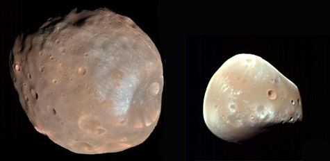

Caractéristiques de la planète rouge
Histoire
Origine
La planète Mars a été formée il y a 4.5 milliards d’années. Cette formation est due en partie à un bombardement météoritique sur un seul de ses deux hémisphères, expliquant la présence de nombreux cratères sur une partie de sa surface.
Pourquoi « Mars » ?
Mars est le dieu romain de la guerre. On la baptisera ainsi à cause de la couleur orangée qu'elle émet qui rappelle le sang.
Compositon
La croûte
La croûte de Mars est constituée d’une grande teneur en oxyde de fer ce qui lui donne cette couleur orangée. Elle est, proportionnellement à sa taille, trois fois plus épaisse que celle de la Terre. Son épaisseur s'échelonne entre 50km et 125km. 
Le manteau
En dessous de la croûte de Mars, vient le manteau de silicates composant 11% à 15,5% de cette couche. Cette partie épaisse de 1860km a donné à la planète ses principales caractéristiques tectoniques et volcaniques, cependant inactives.
La partie interne
La partie interne de Mars est composée essentiellement de fer et d’un peu de souffre (15% environ). Contrairement aux autres planètes telluriques, le noyau ne serait que partiellement fluide, composé essentiellement de fer et de nickel. De plus l’épaisseur du noyau serait de 1300 à 2000km.
Position dans le système solaire
Mars est la 4ème planète en partant du soleil mais c’est également la 2ème planète la plus proche de la Terre après Vénus.
Elle a également deux satellites nommés Deimos et Phobos.
Topographie
Les reliefs de Mars sont très contrastés. Celui que l’on peut particulièrement distinguer est la « Valles Marineris ». C’est un vaste système de canyons, atteignant les 4000 km de long et les 50 km de large. Sa profondeur est estimée à 9 km.
Mars possède le plus grand volcan du système solaire connu appelé L'Olympus Moons, il est 3 fois plus haut que l'Everest. Il fait 27 000 m de haut sur 1000 km de diamètre de base.
Du fait de sa faible densité atmosphérique, la surface de Mars subit de forte altération avec les bombardements météoritiques fréquents. La déformation de sa surface peut également s’expliquer par différents phénomènes comme les tempêtes de poussières annuelles et son ancienne activité volcanique qui a modelé le sol martien.
Climat
La spécificité du climat martien est due à différents paramètres :
- L’effet de serre de Mars est beaucoup moins important que celui de la Terre.
- Du fait de sa distance par rapport au soleil, Mars reçoit peu d’énergie solaire.
Par conséquence, la température moyenne annuelle de Mars est de -53°C à sa surface avec des variations allant de -125°C à +25°C à cause de sa faible atmosphère. En résulte également la présence de 2 saisons distinctes ; l’hiver et l’été caractérisées par la formation et la fonte des glaces aux pôles.
Mars en chiffres
| Diamètre à l'équateur: | 6794 km (0,53 fois celui de la Terre) |
| Masse: | 642 milliards de milliards de tonnes (0,11 fois celui de la Terre) |
| Densité moyenne | 3,94 (eau: 1) |
| Température moyenne de surface | - 55°C |
| Composition de l'atmosphère: | 95% de gaz carbonique, 3% d'azote, traces d'argon et de vapeur d'eau. |
| Période de rotation: | 24 heures et 37 minutes |
| Rayon moyen de l'orbite : | 228 millions de kilomètres (1,52 fois celui de la Terre) |
| Période de révolution: | 687 jours |